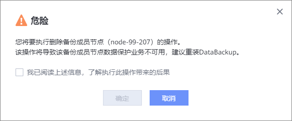

删除成员节点
如果您不再使用某个成员节点，请参考本节操作删除成员节点。
注意事项
不允许删除备节点。如果需要删除备节点，请移除HA成员之后再执行删除成员节点操作。
成员节点为
“
设置中
”
或
“
删除中
”
状态时，不支持删除。
操作步骤
选择
“
系统
>
基础设施
>
集群管理
”
。
选择
“
备份集群
”
。
在待删除的成员节点所在行，单击
“
更多
>
删除
”
。
系统弹出
“
危险
”
提示框，确认提示信息无误后，勾选
“
我已阅读上述信息，了解执行此操作带来的后果
”
，单击
“
确定
”
。

父主题：
管理备节点/成员节点